5 Latest Chinese Comedy Variety TV shows in 2022

The Chinese love comedy shows! Check out these new Chinese Comedy shows from 2022!
1. Rock & Roast Season 5(脱口秀大会 第五季)
This talk show competition program gathers 53 groups of talk show contestants, who will decide the talk show king of this season after several rounds of competition on the newly upgraded ceiling stage, conveying the program concept of "everyone can be happy for 5 minutes" to the audience .
- Link: Youtube
- Link: Ole
- Link: IMDB
- Link: Douban
- Link: Weibo
- Link: Baidu
- Alt Name: 脱口秀大会5
- Rating: 5.8
- Genre: comedy
- First EP: 2022-08-30
- Season: 5.0
- EP: 10
- Actors: Na Ying, Zhou Xun, Da Zhangwei, Li Dan, Yang Chaoyue, more... ( 那英, 周迅, 大张伟, 李诞, 杨超越, 更多...)


2. Super Sketch Show Season 2(一年一度喜剧大赛 第二季)
"The Second Season of the Annual Comedy Contest" is an original comedy competition variety show produced by iQiyi and co-produced and produced by Miwei. Section IP. Use the little things in ordinary life to tap comedians' creative, performance and cooperation abilities, so that comedians can infect the audience with the happiness they create.
- Link: Youtube
- Link: iQiyi
- Link: Ole
- Link: Douban
- Link: Weibo
- Link: Baidu
- Alt Name: 一年一度喜剧大赛2 / 一年一度喜剧大赛 第2季 / 二喜 / Super Sketch Show Season 2 / Super Sketch Show S2
- Rating: 8.1
- Genre: comedy
- First EP: 2022-09-23
- Season: 2.0
- EP: 12
- Actors: Huang Bo, Li Dan, Ma Dong, Yu Hewei, Na Ying, more... ( 黄渤, 李诞, 马东, 于和伟, 那英, 更多...)


3. Mahua Ridicurers(麻花特开心)
The show is a large-scale immersive character experience reality show. Twist family members Shen Teng, Ma Li, Alan, Chang Yuan, Wu Yuhan, Huang Cailun, Wang Chengsi, Liu Xun, Xu Wenhe, Gao Haibao, Li Haiyin and Xu Wubin joined together. As the first group show of Happy Twist, Happy Twist stepped off the stage to experience twelve plot stories adapted from life in the form of a reality show, using unique comedy talent and elements to create a variety show with real emotions Comedy, while bringing joy to the audience, conveys an optimistic and positive outlook on life.
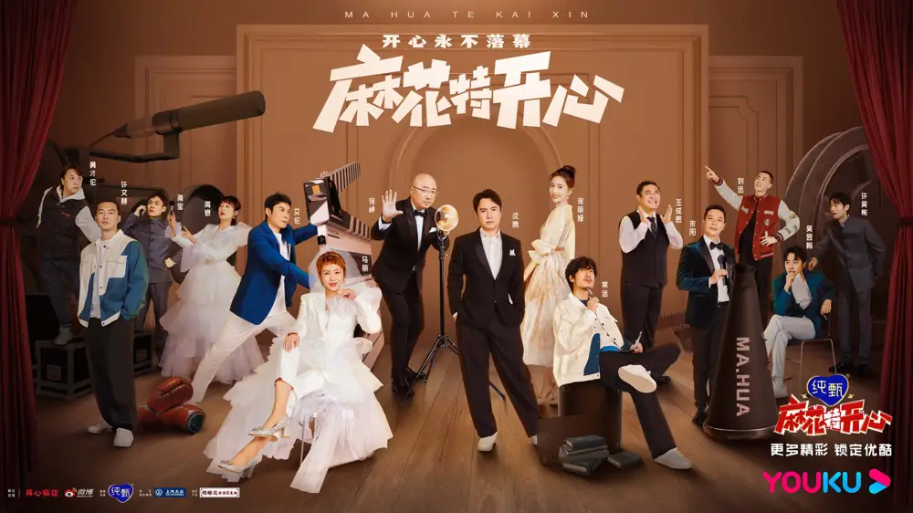 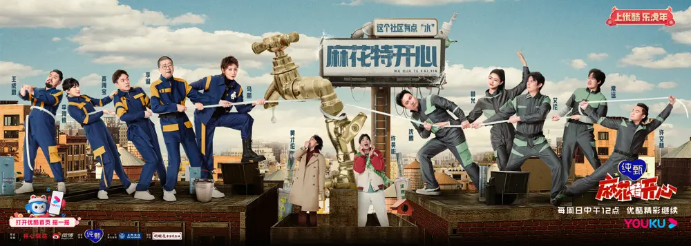 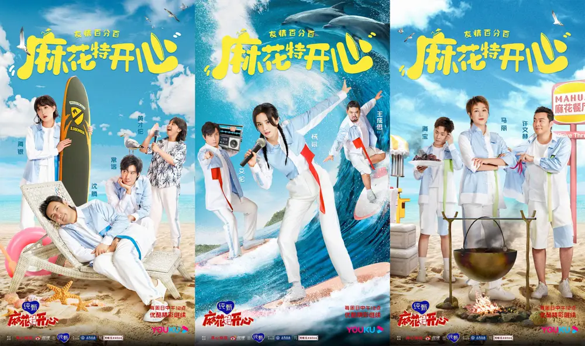 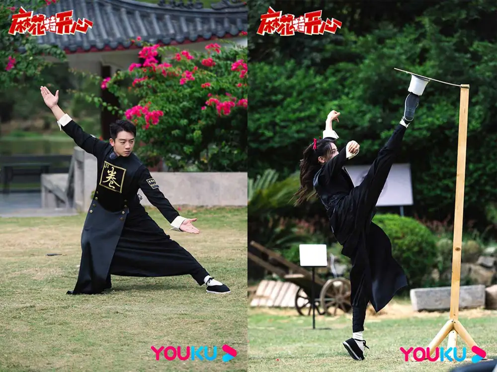4. Broadcast! Comedy Sitcom(开播！情景喜剧)
The program is the country's first sitcom IP incubation reality show. The program takes the sitcom "IP incubation" as the core, takes the "crew" as the main body, and aims at "combining dramas and complexes", and through the presentation of film and television, finally selects a sitcom to incubate the sitcoms belonging to this era .
- Link: Youtube
- Link: Tencent
- Link: Youku
- Link: Ole
- Link: Douban
- Link: Weibo
- Link: Baidu
- Alt Name: 开拍！情景剧
- Rating: 5.5
- Genre: comedy
- First EP: 2022-05-22
- EP: 12
- Actors: Shang Jing, Xiaoshenyang, Wang Zulan, Li Xueqin, Yang Chaoyue, more... ( 尚敬, 小沈阳, 王祖蓝, 李雪琴, 杨超越, 更多...)
 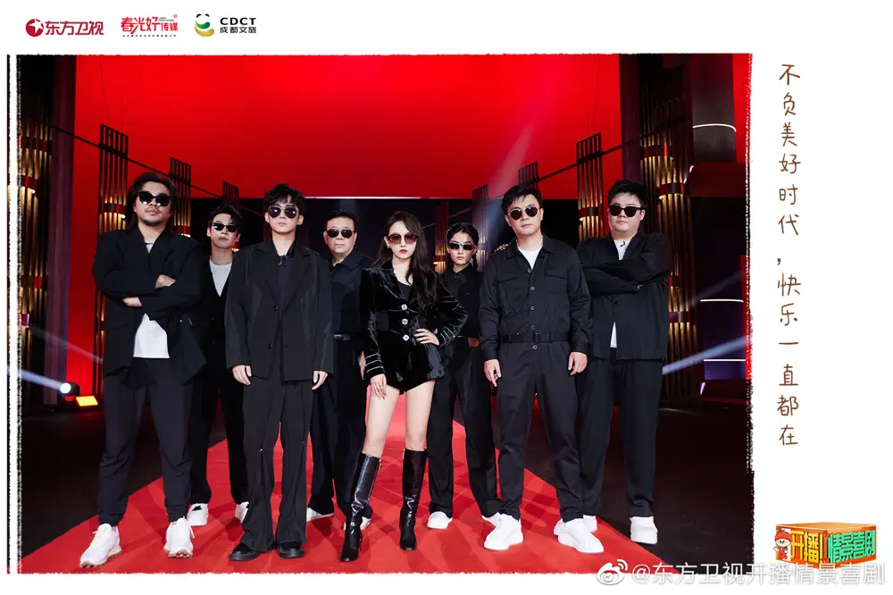
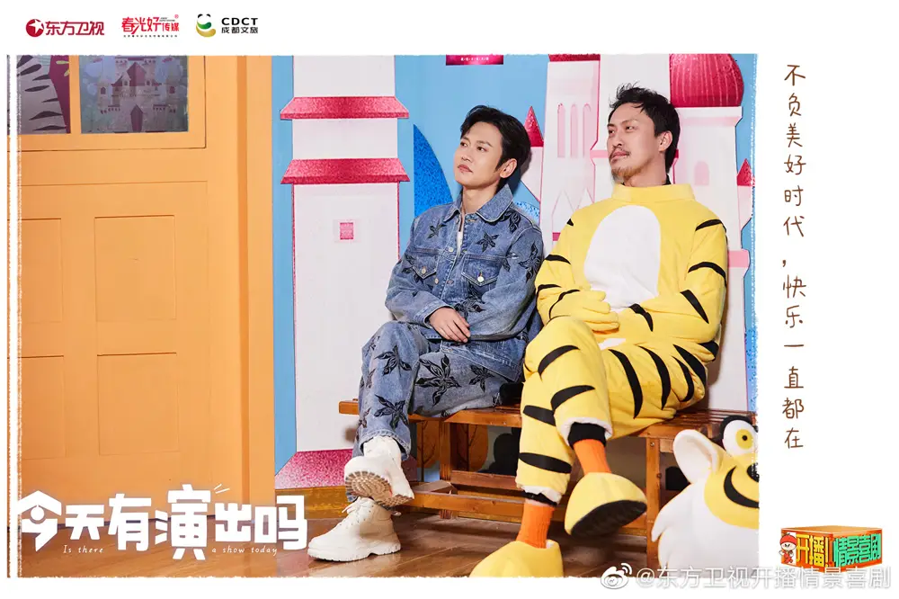
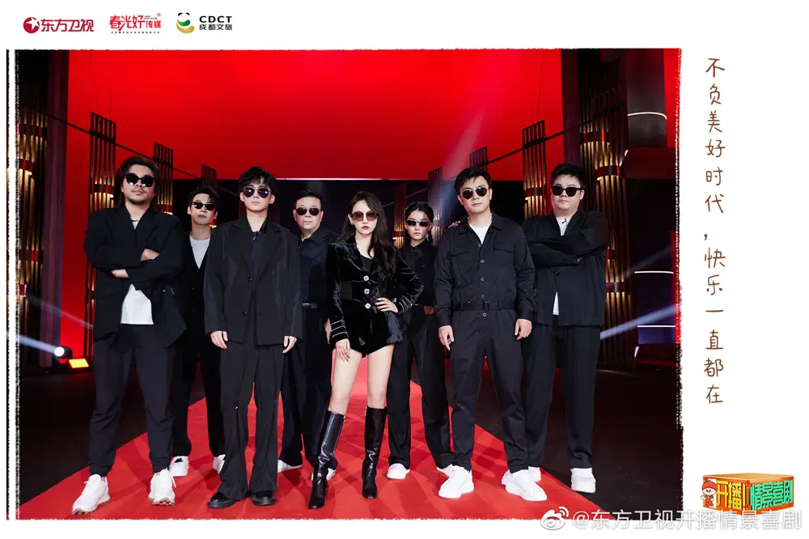
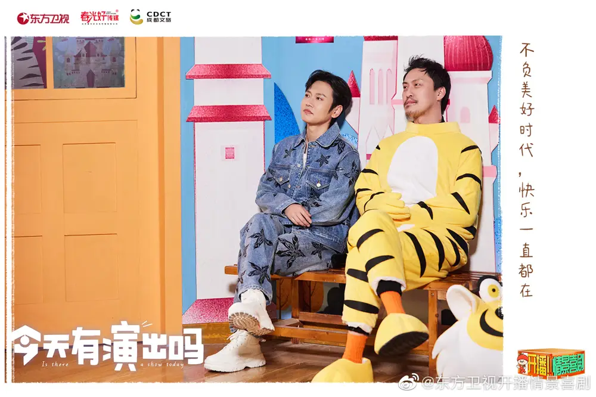
5. Happy Comedian · Old Friends Season(欢乐喜剧人·老友季)
The happy comedians return to the stage of comedians, and the guests will start a duel in a new form of opening a blind box of situational comedy.
- Link: Youtube
- Link: Ole
- Link: Douban
- Link: Baidu
- Rating: 0.0
- Genre: comedy
- First EP: 2022-01-30
- EP: 6
- Actors: Shen Teng, Jia Ling, Ma Li, Yue Yunpeng, Sun Yue, more... ( 沈腾, 贾玲, 马丽, 岳云鹏, 孙越, 更多...)
 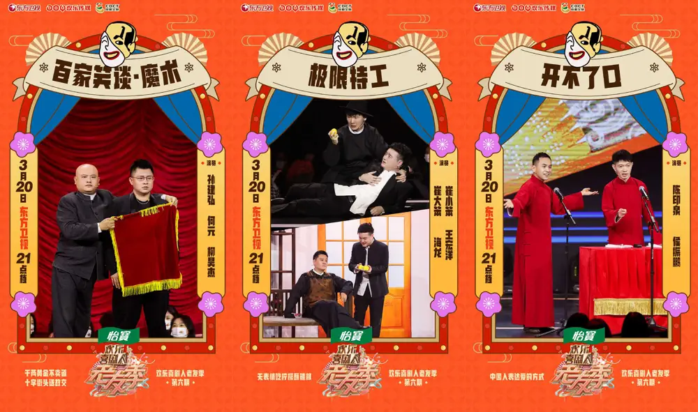
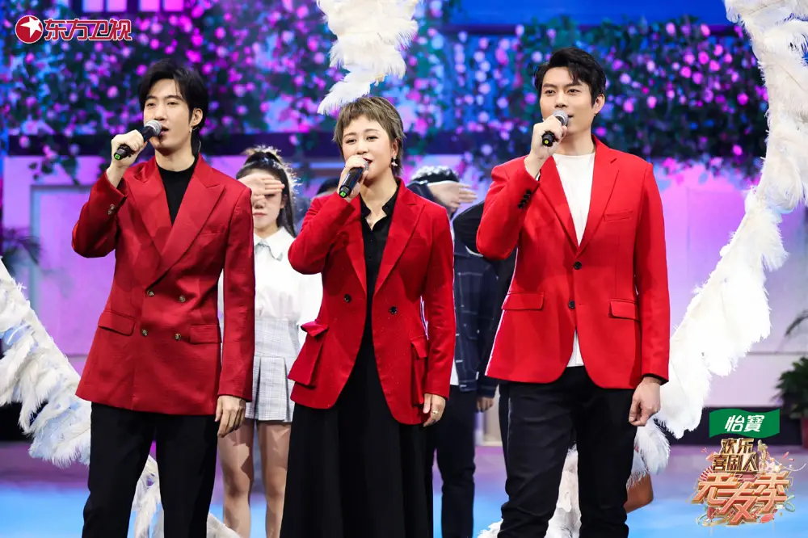
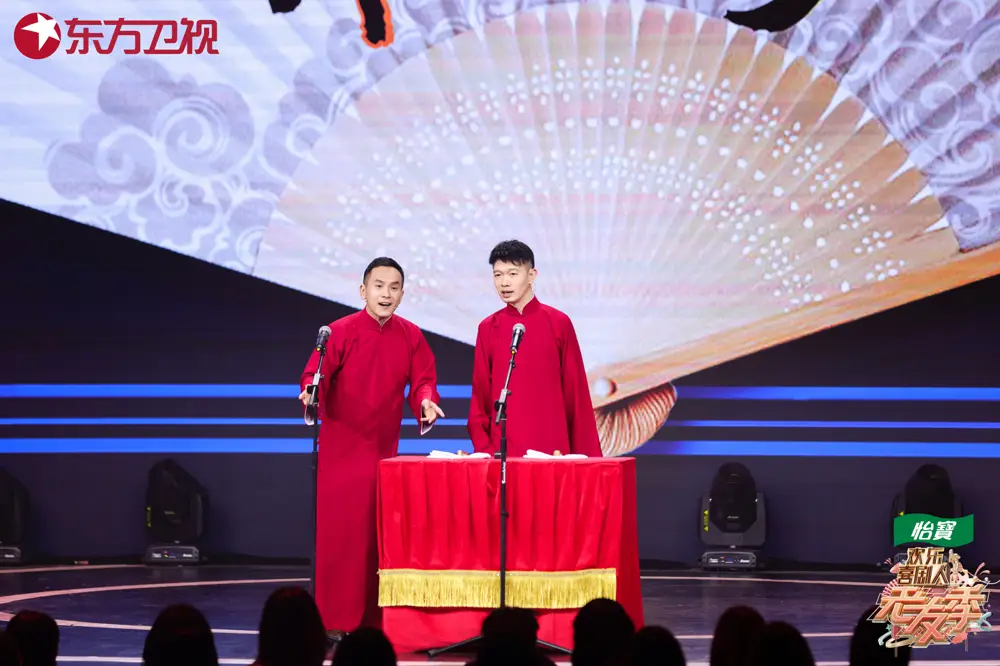
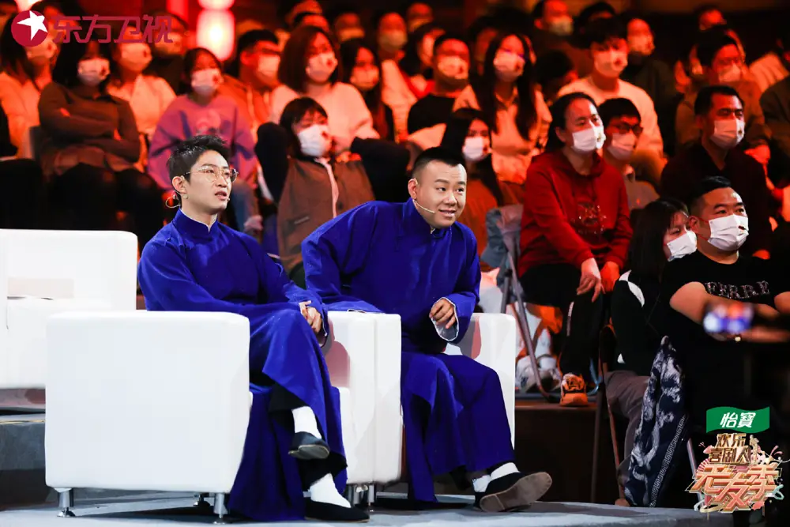
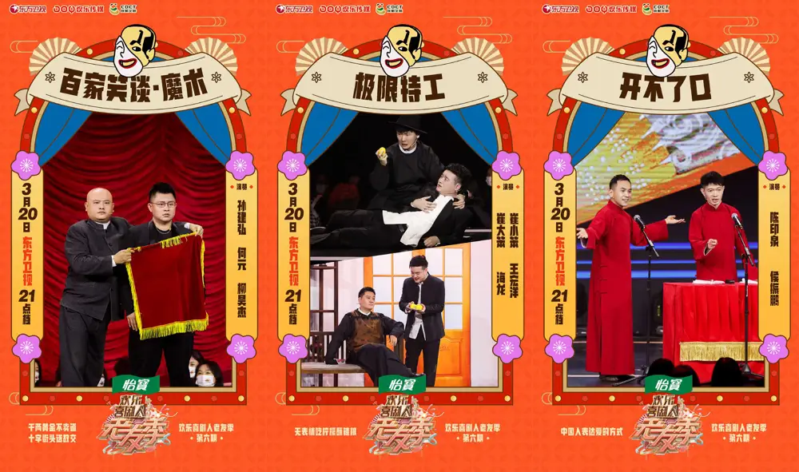
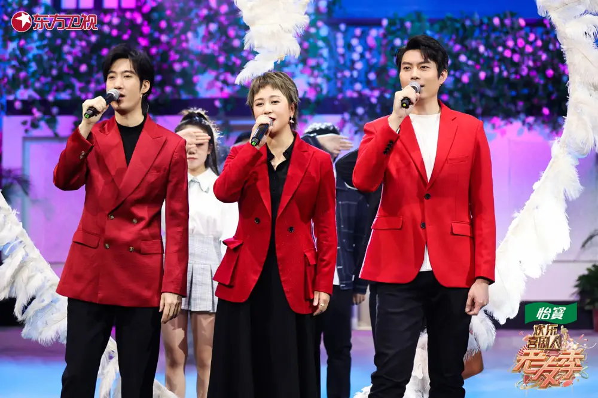
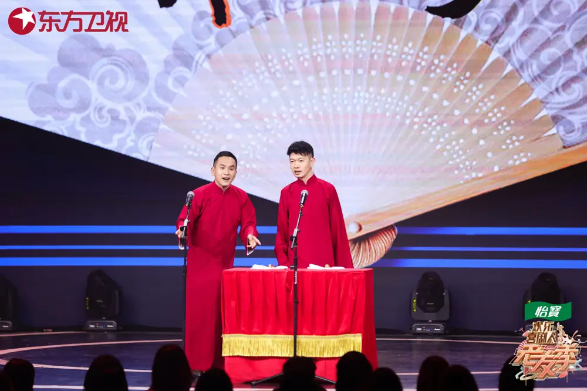
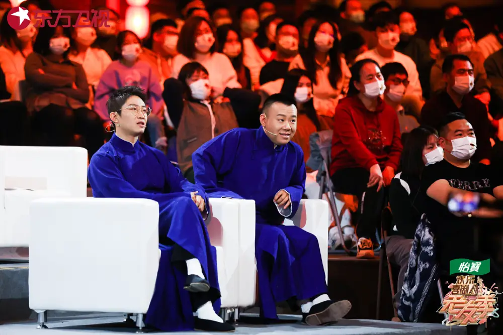